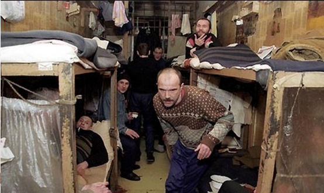
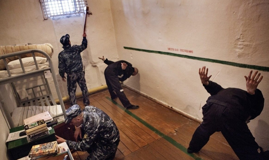

Несовершеннолетние являются особой возрастной группой в праве, в том числе и в уголовном. Выделение несовершеннолетних в общей массе лиц, совершающих преступление, связано с необходимостью учета возрастных, физиологических, психологических характеристик этой категории граждан, проявление заботы о дальнейшей судьбе несовершеннолетнего. Несовершеннолетние пользуются целым рядом привилегий, которых лишены взрослые правонарушители.
Особенности уголовной ответственности и наказания несовершеннолетних установлены главой 14 УК РФ.
Статья 87 УК РФ закрепляет известную истину: несовершеннолетними признаются лица, которым ко времени совершения преступления исполнилось четырнадцать, но не исполнилось восемнадцати лет.
Характерные черты уголовной ответственности и наказания несовершеннолетних:
1) несовершеннолетним можно назначить не все виды уголовных наказаний, распространяющиеся на взрослых, а только следующие (ст. 88 УК РФ):
- штраф (как при наличии у несовершеннолетнего осужденного самостоятельного заработка или имущества, на которое может быть обращено взыскание, так и при отсутствии таковых; штраф по решению суда может взыскиваться с его родителей или иных законных представителей с их согласия; размер штрафа – от одной тысячи до пятидесяти тысяч рублей или в размере заработной платы или иного дохода несовершеннолетнего осужденного за период от двух недель до шести месяцев);
- лишение права заниматься определенной деятельностью;
- обязательные работы (срок – от сорока до ста шестидесяти часов; исполняются в свободное от учебы или основной работы время; продолжительность для лиц в возрасте до пятнадцати лет – до двух часов в день, лиц в возрасте от пятнадцати до шестнадцати лет – до трех часов в день);
- исправительные работы (срок – до одного года);
- ограничение свободы (срок – от двух месяцев до двух лет);
- лишение свободы на определенный срок: несовершеннолетним, совершившим преступления в возрасте до шестнадцати лет, - на срок не свыше шести лет; совершившим особо тяжкие преступления, а также остальным несовершеннолетним - на срок не свыше десяти лет; отбывается в воспитательных колониях. Наказание в виде лишения свободы не может быть назначено несовершеннолетнему осужденному, совершившему в возрасте до шестнадцати лет преступление небольшой или средней тяжести впервые, а также остальным несовершеннолетним осужденным, совершившим преступления небольшой тяжести впервые.
При назначении несовершеннолетнему осужденному наказания в виде лишения свободы за совершение тяжкого либо особо тяжкого преступления низший предел наказания, предусмотренный соответствующей статьей УК РФ, сокращается наполовину;
2) при назначении наказания несовершеннолетнему учитываются условия его жизни и воспитания, уровень психического развития, иные особенности личности, а также влияние на него старших по возрасту лиц;
3) несовершеннолетние, совершившие преступление небольшой или средней тяжести, могут быть освобождены от уголовной ответственности с применением принудительных мер воспитательного воздействия (ст. 90–91 УК РФ):
а) предупреждения – разъяснения несовершеннолетнему вреда, причиненного его деянием, и последствий повторного совершения преступлений;
б) передачи под надзор родителей или лиц, их заменяющих, либо специализированного государственного органа (срок – от одного месяца до двух лет при совершении преступления небольшой тяжести и от шести месяцев до трех лет - при совершении преступления средней тяжести);
в) возложения обязанности загладить причиненный вред (с учетом имущественного положения несовершеннолетнего и наличия у него соответствующих трудовых навыков);
г) ограничения досуга и установления особых требований к поведению несовершеннолетнего (запрета посещения определенных мест, использования определенных форм досуга, в том числе связанных с управлением механическим транспортным средством, ограничения пребывания вне дома после определенного времени суток, выезда в другие местности без разрешения специализированного государственного органа, требования возвратиться в образовательную организацию либо трудоустроиться с помощью специализированного государственного органа; срок – от одного месяца до двух лет при совершении преступления небольшой тяжести и от шести месяцев до трех лет - при совершении преступления средней тяжести);
д) помещения в специальное учебно-воспитательное учреждение закрытого типа – СУВУЗТ (только в случае совершения преступления средней тяжести или тяжкого преступления и необходимости особых условий воспитания, обучения, требующих специального педагогического подхода; срок – до достижения возраста восемнадцати лет, но не более чем на три года). Пребывание несовершеннолетнего в СУВУЗТ прекращается до истечения срока, установленного судом, если судом будет признано, что несовершеннолетний не нуждается более в применении данной меры, либо если у него выявлено заболевание, препятствующее его содержанию и обучению в указанном учреждении.
Несовершеннолетнему может быть назначено одновременно несколько принудительных мер воспитательного воздействия.
В случае систематического неисполнения несовершеннолетним принудительной меры воспитательного воздействия эта мера по представлению специализированного государственного органа отменяется, и материалы направляются для привлечения несовершеннолетнего к уголовной ответственности;
4) несовершеннолетним установлены сокращенные сроки условно-досрочного освобождения:
а) не менее одной трети срока наказания, назначенного судом за преступление небольшой, средней тяжести или тяжкое;
б) не менее двух третей срока наказания, назначенного судом за особо тяжкое преступление;
в) не менее одной четверти срока наказания, назначенного судом за преступление небольшой тяжести, – беременным женщинам и женщинам, имеющим ребенка в возрасте до трех лет, находящегося в доме ребенка исправительного учреждения;
5) несовершеннолетним сокращены вдвое сроки давности привлечения к уголовной ответственности и сроки давности обвинительного приговора;
6) несовершеннолетним сокращены сроки погашения судимости:
а) шесть месяцев после отбытия или исполнения наказания более мягкого, чем лишение свободы;
б) один год после отбытия лишения свободы за преступление небольшой или средней тяжести;
в) три года после отбытия лишения свободы за тяжкое или особо тяжкое преступление.